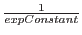
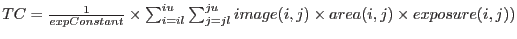
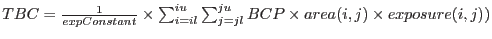
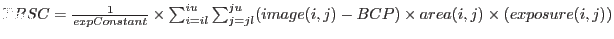
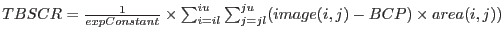
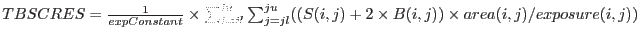
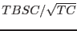
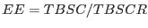

Each pixel from the input image will have been divided by the corresponding exposure image pixel.
Omdetect will then have multiplied each pixel by the median exposure value from the exposure image. This is done
because the source-detection background algorithms do not work very well with the original image.
background algorithms do not work very well with the original image.
In the following formulae, the term  converts the image from counts back to counts/second (ie the original image).
The counts and count-rates are computed using the following formulae- The total counts (TC) within the aperture is given by,
For ``point-like'' sources, the indices il, iu, jl and ju encompass all the pixels within the aperture centred on the source, whilst for ``extended'' ones il, iu, jl and ju encompass all the pixels assigned to the source- only a pixel within the box that is actually part of the source is used in the following summations. area(i, j), is the fractional area of the pixel within the aperture (0- completely outside, 1- completely inside, for extended sources it is always 1), exposure(i, j) is the value of the exposure (from the exposure image) and expConstant is the exposure value that all the image pixels have been multiplied by.
The total background counts (TBC) within the aperture is given by
,
where BCP is the backround counts per pixel. For ``point-like'' sources this value is computed using the pixels within a circular annulus centred on the source of inner and outer radii of 8 and 13 unbinned pixels, respectively. Image pixels in which the corresponding quality pixel is 1 (ie a bad pixel) are ignored. In any case where the number of such pixels is less than 100 (ie less than one third that would normally be contained within the annulus, the background image is used to obtain a background value using the same annulus). For ``extended'' sources the background image is used to subtract the background.
The total background-subtracted counts (TBSC) within the aperture is given by
,
The total background-subtracted count-rate (TBSCR) within the aperture is given by
,
The total background-subtracted count-rate error squared (TBSCRES) within the aperture is given by
,
where S(i, j) and B(i, j) are the background-subtracted counts and background counts, respectively, at pixel(i, j).
The source significance (signal-to-noise) is given by

The background-subtracted count-rate error (BSCRE) is given by
The effective exposure (EE) for the source is given by